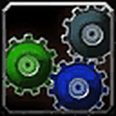
Eureka!
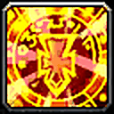
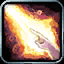
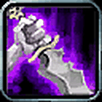
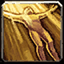
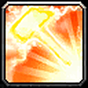
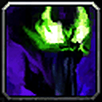
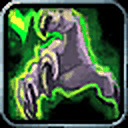
New Priest race. Eureka! cuts the cost of your next 3 casts and adds 10% damage or healing: the PvE pick.

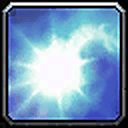
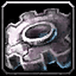
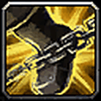
Will to Survive breaks stuns and Perception counters stealth: the PvP pick.
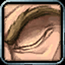
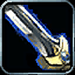
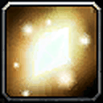
Not covered in the guide.

Not covered in the guide.
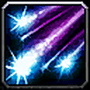
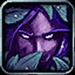
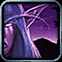
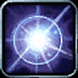
Berserking is a flat 10% cast and attack speed burst; +5% damage to beasts and better combat regeneration. The PvE pick.
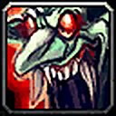
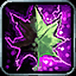
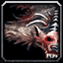

Will of the Forsaken (Fear, Sleep, Charm) and Touch of the Grave. The PvP pick.
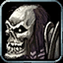
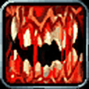
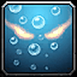
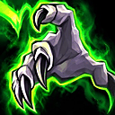